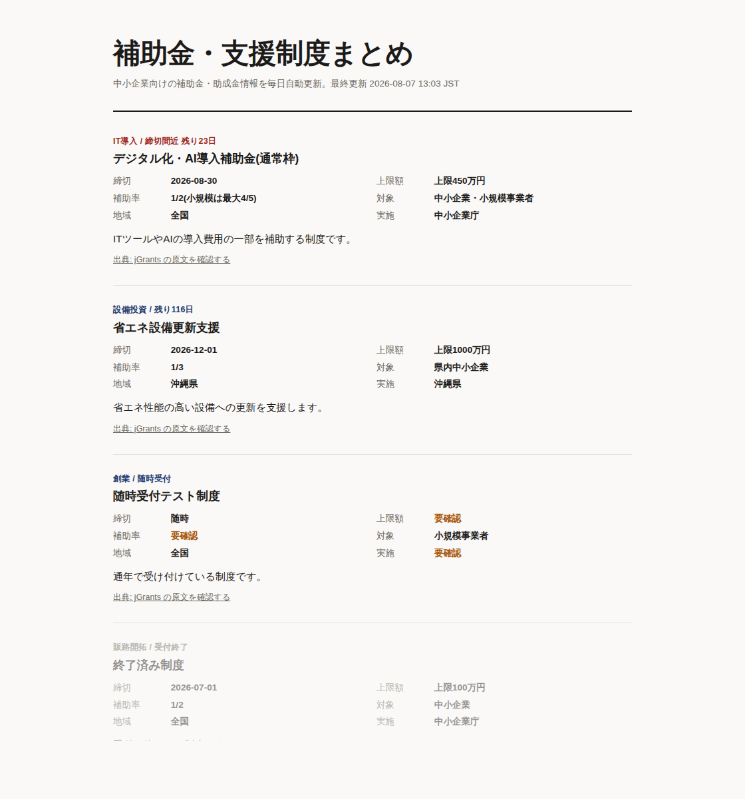

補助金まとめサイト 構築テンプレ
地域や業種で切った補助金情報サイトを作りたい人に
国の補助金ポータルjGrantsの公式APIから受付中の制度を毎日取得。締切と金額はAPIの値をそのまま機械転記し、AIには要約しか書かせません。締切が近い順に自動整列、終了分は自動で薄く。
- jGrants公式API対応
- 締切間近の自動強調
- 出典リンク必須の品質ゲート
¥12,800先行価格 ¥9,800
販売ページで詳細を見る(準備中)

全商品、動くコード一式+日本語手順書+30日間のセットアップサポートつき。読んで終わりのノウハウ集ではありません。販売ページは順次公開します(準備中)。
国の補助金ポータルjGrantsの公式APIから受付中の制度を毎日取得。締切と金額はAPIの値をそのまま機械転記し、AIには要約しか書かせません。締切が近い順に自動整列、終了分は自動で薄く。
RSSやWebサイトを1日2回巡回し、AIが日付・金額・対象者を抽出して一覧サイトに。原文から確認できない項目は「要確認」と表示し、断定させない安全設計です。ヒーローのスクリーンショットはこのテンプレの姉妹版で生成したものです。
売上CSVを置いておくだけで、毎週月曜の朝に集計表+AI所見つきレポートが届きます。計算はプログラム、文章だけAI。だから数字は間違えません。顧問先への提供もライセンスで明示的に許可。
ネタ帳に一行書いておくと、毎週金曜に1週間分の下書き(Instagram+X+カルーセル案+画像アイデア)がまとまって出てきます。検索キーワードを冒頭に織り込む2026年設計。タグは内容直結の5個まで。
AIの自動化は、設計を間違えると「自信満々に間違える機械」になります。全商品を同じ原則で作っています。
計算と転記はプログラムが行い、AIは要約と文章だけを担当します。売上の集計が1円ズレたり、補助金の締切をAIが創作したりしない構造です。
原文から確定できない情報は断定せず、要確認と表示して出典リンクへ誘導します。見栄えより、読者の信頼を優先しています。
1回の実行で処理する件数に上限があり、API費用が跳ねません。失敗したデータは公開されず隔離されます。
購入者限定の有償メニューです。「買ったけど動かせなかった」をゼロにします。
| セットアップ代行 | リポジトリ構築からAPIキー設定、初回実行の確認まで丸ごと | ¥30,000 |
|---|---|---|
| 特化カスタマイズ | 上記+抽出項目とデザインをあなたの業種向けに調整 | ¥50,000 |
| 月額メンテナンス | 情報源の追加・不具合対応・月次の品質チェック | ¥10,000/月 |
不要です。手順書はGitHubの画面操作から書いてあり、設定はテキストファイルの書き換えだけ。30日間のセットアップサポートもつきます。
サーバー代は0円(GitHub無料枠)。AIの利用料が従量課金で、多くの用途で月数百円に収まります。件数上限があるので想定外の課金は起きにくい設計です。
使えます。購入者本人の事業での利用(リード獲得・広告・顧問先への提供)は自由で、サイト数の制限もありません。テンプレート自体の再販売・再配布だけ禁止です。